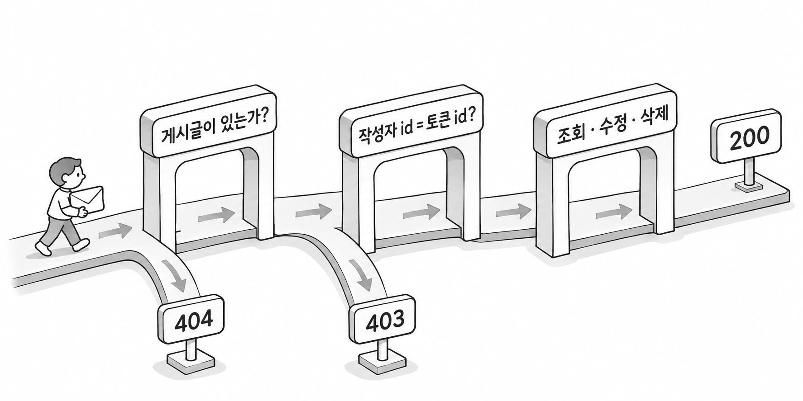
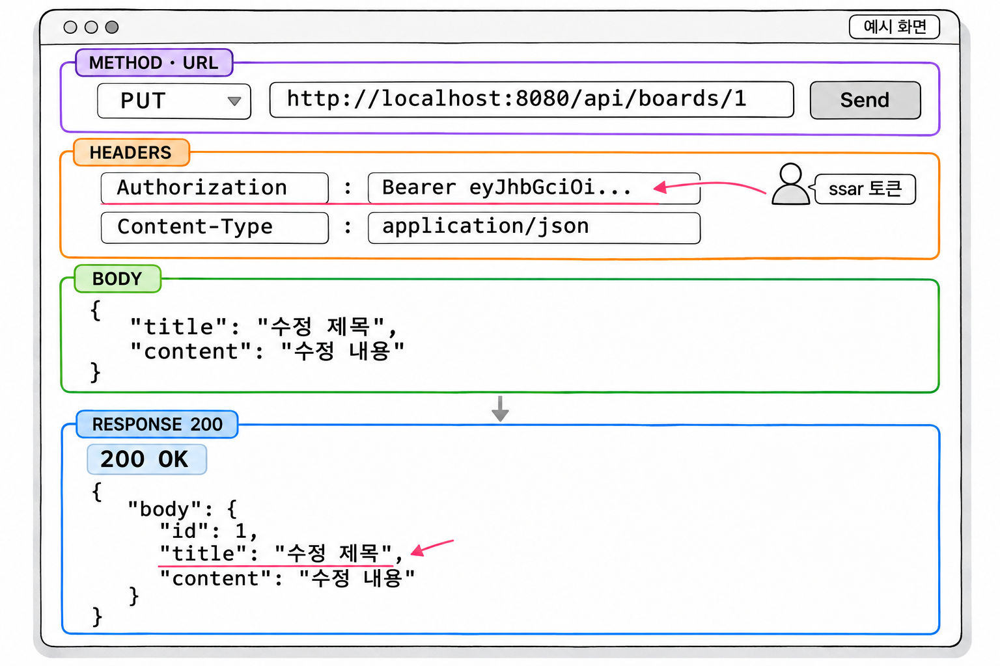

11장. 게시글 수정과 삭제
이 장에서는 게시글 API 세 개를 더 만듭니다. 수정 화면에 채울 기존 내용 조회, 게시글 수정, 게시글 삭제입니다. 세 API 모두 작성자만 쓸 수 있습니다.
| 기능 | 메서드와 주소 | 누가 쓸 수 있는가 |
|---|---|---|
| 수정 정보 | GET /api/boards/{boardId}/edit | 작성자 |
| 수정 | PUT /api/boards/{boardId} | 작성자 |
| 삭제 | DELETE /api/boards/{boardId} | 작성자 |
9장에서 나눈 두 단계 인가를 그대로 적용합니다. 로그인했는지는 URL 규칙이 확인하고, 작성자인지는 서비스 코드가 확인합니다.
1. 작성자 확인 패턴
"이 글의 작성자인가"는 게시글을 DB에서 꺼내 봐야 알 수 있습니다. URL 규칙은 주소와 역할만 보므로 이 판단은 서비스 메서드가 맡습니다. 수정 정보, 수정, 삭제 메서드는 모두 같은 세 단계로 작성합니다.
| 순서 | 하는 일 | 실패하면 |
|---|---|---|
| 1 | findById()로 게시글 조회 | NotFoundException → 404 |
| 2 | 게시글 작성자 id와 토큰의 id 비교 | ForbiddenException → 403 |
| 3 | 실제 작업(조회 · 수정 · 삭제) | - |
기본 문법
Board board = boardRepository.findById(boardId)
.orElseThrow(() -> new NotFoundException("게시글을 찾을 수 없습니다"));
if (!board.getUser().getId().equals(sessionUserId)) {
throw new ForbiddenException("권한이 없을 때 보낼 메시지");
}
// 실제 작업있는 글인지를 먼저 확인하고, 작성자인지는 그다음에 확인합니다. 게시글이 없으면 비교할 작성자도 없기 때문입니다. 그래서 없는 글에 요청하면 누가 요청하든 404를 받습니다.
비교할 때는 10장에서처럼 값이 반드시 있는 쪽인 DB의 작성자 id에서 equals()를 호출합니다. 2절의 URL 규칙 덕분에 이 메서드들에 오는 sessionUserId는 null이 아닙니다. 그래도 DB 값 쪽에서 equals()를 부르는 습관을 지키면 규칙이 바뀌어도 NullPointerException이 나지 않습니다.
두 예외는 4장에서 만든 사용자 정의 예외입니다. 서비스는 던지기만 하고, GlobalExceptionHandler가 상태 코드와 메시지를 담은 공통 응답으로 바꿉니다.

2. 수정 정보 URL 규칙 추가
2.1 permitAll 규칙에 먼저 걸리는 문제
PUT과 DELETE 요청에는 규칙을 새로 쓸 필요가 없습니다. 6장의 GET /api/boards/** 규칙은 GET 요청에만 적용됩니다. 그래서 PUT /api/boards/1과 DELETE /api/boards/1은 아래쪽 /api/** 규칙에 걸려 로그인이 필요합니다.
문제는 GET /api/boards/{boardId}/edit입니다. 이 주소는 수정 화면에 기존 제목과 내용을 채우려고 부르는 조회이므로 작성자만 볼 수 있어야 합니다. 그런데 GET 요청이고 /api/boards/로 시작하므로 GET /api/boards/**의 permitAll()에 먼저 걸립니다. URL 규칙은 위에서부터 처음 맞는 하나만 적용됩니다.
| 규칙 상태 | 토큰 없이 GET /api/boards/1/edit |
|---|---|
| edit 규칙 없음 | permitAll()로 통과 → sessionUser가 null → 컨트롤러의 sessionUser.getId()에서 NullPointerException → 500, "관리자에게 문의하세요" |
edit 규칙을 permitAll() 위에 추가 | 필터 단계에서 막힘 → 401, "로그인 후 이용해주세요" |
로그인하지 않은 사용자의 요청인데 응답이 401이 아니라 500이면 클라이언트는 서버 고장으로 오해합니다. 그래서 edit 주소의 규칙을 GET /api/boards/**보다 위에 한 줄 추가합니다.
예제 11-1 — 수정 정보 URL 규칙 추가하기
이어서: 예제 7-4
파일명: src/main/java/com/newtenco/blog/core/SecurityConfig.java
package com.newtenco.blog.core;
import com.newtenco.blog.core.filter.JwtAuthorizationFilter;
import com.newtenco.blog.core.util.JwtProvider;
import com.newtenco.blog.core.util.RespFilter;
import lombok.RequiredArgsConstructor;
import org.springframework.beans.factory.annotation.Value;
import org.springframework.context.annotation.Bean;
import org.springframework.context.annotation.Configuration;
import org.springframework.http.HttpMethod;
import org.springframework.security.config.annotation.web.builders.HttpSecurity;
import org.springframework.security.config.http.SessionCreationPolicy;
import org.springframework.security.crypto.bcrypt.BCryptPasswordEncoder;
import org.springframework.security.crypto.password.PasswordEncoder;
import org.springframework.security.web.SecurityFilterChain;
import org.springframework.security.web.authentication.UsernamePasswordAuthenticationFilter;
import org.springframework.web.cors.CorsConfiguration;
import org.springframework.web.cors.CorsConfigurationSource;
import org.springframework.web.cors.UrlBasedCorsConfigurationSource;
import java.util.List;
@RequiredArgsConstructor
@Configuration
public class SecurityConfig {
private final JwtProvider jwtProvider;
@Value("${app.cors.allowed-origins}")
private String allowedOrigins;
// 비밀번호 암호화 도구 (회원가입: encode / 로그인: matches)
@Bean
public PasswordEncoder passwordEncoder() {
return new BCryptPasswordEncoder();
}
// CORS: 다른 출처(예: React localhost:5173)에서 오는 요청을 허용한다
@Bean
public CorsConfigurationSource corsConfigurationSource() {
CorsConfiguration config = new CorsConfiguration();
config.setAllowedOriginPatterns(List.of(allowedOrigins.split(",")));
config.setAllowedMethods(List.of("GET", "POST", "PUT", "DELETE", "OPTIONS"));
config.addAllowedHeader("*");
// JWT 는 쿠키가 아니라 Authorization 헤더로 보내므로 쿠키 동봉은 필요 없다
config.setAllowCredentials(false);
UrlBasedCorsConfigurationSource source = new UrlBasedCorsConfigurationSource();
source.registerCorsConfiguration("/**", config);
return source;
}
@Bean
public SecurityFilterChain filterChain(HttpSecurity http) throws Exception {
// 1. H2 콘솔은 iframe 으로 동작하므로 같은 출처의 iframe 은 허용
http.headers(headers -> headers.frameOptions(frame -> frame.sameOrigin()));
// 2. CORS 적용
http.cors(cors -> cors.configurationSource(corsConfigurationSource()));
// 3. 우리가 쓰지 않는 기본 기능 끄기
http.csrf(csrf -> csrf.disable()); // 쿠키를 쓰지 않으므로 CSRF 위험 없음
http.formLogin(form -> form.disable()); // 스프링 기본 로그인 화면 끄기
http.httpBasic(basic -> basic.disable()); // 브라우저 팝업 로그인 끄기
// 4. 세션을 만들지 않는다 (JWT = Stateless)
http.sessionManagement(session -> session.sessionCreationPolicy(SessionCreationPolicy.STATELESS));
// 5. 우리가 만든 JWT 필터를 UsernamePasswordAuthenticationFilter 앞에 끼워 넣는다
http.addFilterBefore(new JwtAuthorizationFilter(jwtProvider), UsernamePasswordAuthenticationFilter.class);
// 6. 인증(401) / 권한(403) 실패 시 JSON 으로 응답
http.exceptionHandling(ex -> ex
.authenticationEntryPoint((req, res, e) -> RespFilter.fail(res, 401, "로그인 후 이용해주세요"))
.accessDeniedHandler((req, res, e) -> RespFilter.fail(res, 403, "권한이 없습니다")));
// 7. URL 별 접근 규칙 (위에서부터 먼저 맞는 규칙이 적용된다)
http.authorizeHttpRequests(auth -> auth
.requestMatchers(HttpMethod.OPTIONS, "/**").permitAll() // CORS 사전 요청
.requestMatchers("/join", "/login", "/check-username").permitAll() // 회원가입, 로그인, 중복체크
.requestMatchers("/h2-console/**").permitAll() // H2 콘솔
.requestMatchers("/api/admin/**").hasRole("ADMIN") // 관리자 전용
.requestMatchers(HttpMethod.GET, "/api/boards/*/edit").hasAnyRole("USER", "ADMIN") // 수정 정보는 로그인 필요
.requestMatchers(HttpMethod.GET, "/api/boards/**").permitAll() // 글 목록/상세는 누구나
.requestMatchers("/api/**").hasAnyRole("USER", "ADMIN") // 나머지 API 는 로그인 필요
.anyRequest().denyAll() // 그 외 주소는 모두 차단
);
return http.build();
}
}실행 결과
서버를 다시 실행하면 오류 없이 시작됩니다. edit 주소를 처리할 컨트롤러는 3절에서 만들므로, 규칙의 효과는 4절에서 확인합니다.
바뀐 곳은 7번 규칙의 /api/boards/*/edit 한 줄입니다. 이 규칙은 로그인 여부만 확인합니다. ADMIN 역할이 있는 cos도 이 규칙은 통과하지만, 남의 글이면 서비스의 작성자 확인에서 403을 받습니다.
2.2 *와 ** 패턴
두 규칙은 와일드카드가 *와 **로 다르고, 그래서 맞는 주소의 범위도 크게 다릅니다. *는 경로 한 칸(슬래시 사이 한 구간)에 맞고, **는 남은 경로 0칸 이상에 맞습니다.
| 패턴 | 맞는 주소 | 맞지 않는 주소 |
|---|---|---|
/api/boards/*/edit | /api/boards/1/edit, /api/boards/abc/edit | /api/boards/1/2/edit, /api/boards/edit |
/api/boards/** | /api/boards, /api/boards/1, /api/boards/1/edit | /api/replies |
/api/boards/**는 edit 주소까지 포함하는 넓은 규칙입니다. 그래서 좁은 규칙인 /api/boards/*/edit를 위에 둬야 합니다. 규칙은 좁은 것에서 넓은 것 순서로 적는다고 기억하면 됩니다.
*는 그 칸의 글자가 숫자인지 따지지 않습니다. /api/boards/abc/edit도 이 규칙에 맞으므로 토큰이 있으면 통과합니다. 그 뒤 컨트롤러가 abc를 Integer로 바꾸지 못해 9장에서 만든 경로 변수 타입 불일치 처리기가 400으로 응답합니다.
스프링 시큐리티 7의 requestMatchers()는 스프링의 경로 패턴 문법을 따릅니다. 이 문법에서는 **를 패턴 끝에만 쓸 수 있습니다. /api/**/edit처럼 **를 중간에 넣으면 패턴을 해석하지 못해 서버가 시작되지 않습니다[확인 필요: Spring Framework 7의 PathPattern에서 ** 위치 규칙이 바뀌었는지 확인].
3. 수정·삭제 서비스와 컨트롤러
3.1 수정 정보·수정·삭제 메서드
수정 요청 본문을 받을 UpdateDTO를 BoardRequest에 추가합니다. 서비스에는 1절의 패턴으로 메서드 세 개를 추가하고, 컨트롤러에는 각 메서드를 부를 주소 세 개를 추가합니다.
예제 11-2 — 게시글 수정·삭제 API 만들기
이어서: 예제 11-1
파일명: src/main/java/com/newtenco/blog/board/BoardRequest.java
package com.newtenco.blog.board;
import com.newtenco.blog.user.User;
import jakarta.validation.constraints.NotBlank;
import jakarta.validation.constraints.Size;
public class BoardRequest {
// 게시글 쓰기: {"title":"제목","content":"내용"}
public record SaveDTO(
@NotBlank(message = "제목을 입력해주세요")
@Size(max = 100, message = "제목은 100자 이하로 입력해주세요")
String title,
@NotBlank(message = "내용을 입력해주세요")
@Size(max = 1000, message = "내용은 1000자 이하로 입력해주세요")
String content) {
public Board toEntity(User user) {
return Board.builder()
.title(title)
.content(content)
.user(user)
.build();
}
}
// 게시글 수정: {"title":"수정 제목","content":"수정 내용"}
public record UpdateDTO(
@NotBlank(message = "제목을 입력해주세요")
@Size(max = 100, message = "제목은 100자 이하로 입력해주세요")
String title,
@NotBlank(message = "내용을 입력해주세요")
@Size(max = 1000, message = "내용은 1000자 이하로 입력해주세요")
String content) {
}
}파일명: src/main/java/com/newtenco/blog/board/BoardService.java
package com.newtenco.blog.board;
import com.newtenco.blog.core.handler.errors.ForbiddenException;
import com.newtenco.blog.core.handler.errors.NotFoundException;
import com.newtenco.blog.user.User;
import lombok.RequiredArgsConstructor;
import org.springframework.stereotype.Service;
import org.springframework.transaction.annotation.Transactional;
import java.util.List;
@Transactional(readOnly = true)
@RequiredArgsConstructor
@Service
public class BoardService {
private final BoardRepository boardRepository;
public List<BoardResponse.DTO> 게시글목록() {
return boardRepository.findAllJoinUser().stream()
.map(BoardResponse.DTO::new)
.toList();
}
@Transactional
public BoardResponse.DTO 게시글쓰기(BoardRequest.SaveDTO reqDTO, User sessionUser) {
Board savedBoard = boardRepository.save(reqDTO.toEntity(sessionUser));
return new BoardResponse.DTO(savedBoard);
}
public BoardResponse.DetailDTO 게시글상세(Integer boardId, Integer sessionUserId) {
Board board = boardRepository.findByIdJoinUserAndReplies(boardId)
.orElseThrow(() -> new NotFoundException("게시글을 찾을 수 없습니다"));
return new BoardResponse.DetailDTO(board, sessionUserId);
}
// 수정 화면에 채울 기존 내용 (작성자만)
public BoardResponse.DTO 게시글수정정보(Integer boardId, Integer sessionUserId) {
Board board = boardRepository.findById(boardId)
.orElseThrow(() -> new NotFoundException("게시글을 찾을 수 없습니다"));
if (!board.getUser().getId().equals(sessionUserId)) {
throw new ForbiddenException("게시글에 접근할 권한이 없습니다");
}
return new BoardResponse.DTO(board);
}
@Transactional
public BoardResponse.DTO 게시글수정(Integer boardId, BoardRequest.UpdateDTO reqDTO, Integer sessionUserId) {
Board board = boardRepository.findById(boardId)
.orElseThrow(() -> new NotFoundException("게시글을 찾을 수 없습니다"));
if (!board.getUser().getId().equals(sessionUserId)) {
throw new ForbiddenException("게시글을 수정할 권한이 없습니다");
}
board.update(reqDTO.title(), reqDTO.content()); // 더티 체킹
return new BoardResponse.DTO(board);
}
@Transactional
public void 게시글삭제(Integer boardId, Integer sessionUserId) {
Board board = boardRepository.findById(boardId)
.orElseThrow(() -> new NotFoundException("게시글을 찾을 수 없습니다"));
if (!board.getUser().getId().equals(sessionUserId)) {
throw new ForbiddenException("게시글을 삭제할 권한이 없습니다");
}
boardRepository.delete(board); // cascade = REMOVE 로 댓글도 함께 삭제
}
}파일명: src/main/java/com/newtenco/blog/board/BoardController.java
package com.newtenco.blog.board;
import com.newtenco.blog.core.util.Resp;
import com.newtenco.blog.user.User;
import jakarta.validation.Valid;
import lombok.RequiredArgsConstructor;
import org.springframework.http.ResponseEntity;
import org.springframework.security.core.annotation.AuthenticationPrincipal;
import org.springframework.web.bind.annotation.*;
@RequestMapping("/api/boards")
@RequiredArgsConstructor
@RestController
public class BoardController {
private final BoardService boardService;
// GET /api/boards : 누구나
@GetMapping
public ResponseEntity<?> findAll() {
return Resp.ok(boardService.게시글목록());
}
// POST /api/boards : 로그인 필요
@PostMapping
public ResponseEntity<?> save(@AuthenticationPrincipal User sessionUser,
@Valid @RequestBody BoardRequest.SaveDTO reqDTO) {
return Resp.ok(boardService.게시글쓰기(reqDTO, sessionUser));
}
// GET /api/boards/1 : 누구나 (로그인하지 않았으면 sessionUser 는 null)
@GetMapping("/{boardId}")
public ResponseEntity<?> findById(@AuthenticationPrincipal User sessionUser,
@PathVariable("boardId") Integer boardId) {
Integer sessionUserId = (sessionUser == null) ? null : sessionUser.getId();
return Resp.ok(boardService.게시글상세(boardId, sessionUserId));
}
// GET /api/boards/1/edit : 작성자만
@GetMapping("/{boardId}/edit")
public ResponseEntity<?> updateInfo(@AuthenticationPrincipal User sessionUser,
@PathVariable("boardId") Integer boardId) {
return Resp.ok(boardService.게시글수정정보(boardId, sessionUser.getId()));
}
// PUT /api/boards/1 : 작성자만
@PutMapping("/{boardId}")
public ResponseEntity<?> update(@AuthenticationPrincipal User sessionUser,
@PathVariable("boardId") Integer boardId,
@Valid @RequestBody BoardRequest.UpdateDTO reqDTO) {
return Resp.ok(boardService.게시글수정(boardId, reqDTO, sessionUser.getId()));
}
// DELETE /api/boards/1 : 작성자만
@DeleteMapping("/{boardId}")
public ResponseEntity<?> deleteById(@AuthenticationPrincipal User sessionUser,
@PathVariable("boardId") Integer boardId) {
boardService.게시글삭제(boardId, sessionUser.getId());
return Resp.ok(null);
}
}실행 결과
서버를 실행하고 ssar 토큰을 Authorization 헤더에 넣어 PUT /api/boards/1에 {"title":"수정 제목","content":"수정 내용"}을 보내면 다음과 같이 응답합니다. createdAt은 서버를 실행한 시각에 따라 다릅니다.
{"status":200,"msg":"성공","body":{"id":1,"title":"수정 제목","content":"수정 내용","username":"ssar","createdAt":"..."}}세 서비스 메서드는 1절의 패턴을 따르고, 3단계에서 하는 일만 다릅니다.
| 메서드 | 3단계 작업 | 트랜잭션 |
|---|---|---|
게시글수정정보() | 게시글을 BoardResponse.DTO로 바꿔 반환 | 클래스의 readOnly = true |
게시글수정() | board.update()로 필드 변경 | @Transactional |
게시글삭제() | boardRepository.delete(board) | @Transactional |
게시글수정()은 board.update()만 부르고 save()를 부르지 않습니다. findById()로 꺼낸 board는 영속성 컨텍스트가 관리하는 엔티티입니다. 그래서 트랜잭션이 끝날 때 JPA가 더티 체킹으로 바뀐 필드를 찾아 update 쿼리를 실행합니다. 9장 회원 수정과 같은 방식입니다. 이 메서드는 데이터를 바꾸므로 메서드에 @Transactional을 따로 붙여 클래스의 readOnly = true를 덮어씁니다.
수정 정보 응답에는 목록에서 쓰던 BoardResponse.DTO를 그대로 씁니다. 수정 화면에 필요한 값은 제목과 내용뿐이고 댓글은 필요 없습니다. 작성자인지는 서비스가 이미 확인했으므로 isOwner도 필요 없습니다.
컨트롤러의 새 메서드 세 개는 sessionUser가 null인지 검사하지 않고 바로 sessionUser.getId()를 부릅니다. 세 주소 모두 URL 규칙이 로그인한 요청만 통과시키므로 컨트롤러에 도착한 sessionUser는 null이 아닙니다. 2.1에서 본 500 오류는 이 전제가 깨질 때, 곧 edit 규칙이 없을 때 생깁니다.
삭제는 돌려줄 데이터가 없으므로 Resp.ok(null)로 응답합니다. 4장에서 정한 대로 body가 null인 성공 응답입니다.
3.2 게시글을 지우면 댓글은 어떻게 되는가
reply_tb의 board_id 컬럼은 board_tb를 가리키는 외래 키(FK)입니다. 댓글이 달린 게시글만 지우면 남은 댓글이 존재하지 않는 게시글을 가리키게 됩니다. 그래서 DB가 삭제를 거부합니다. 게시글을 지우기 전에 그 게시글의 댓글을 먼저 지워야 합니다.
2장에서 만든 Board 엔티티의 replies 필드에 댓글을 먼저 지우는 일을 맡겨 두었습니다.
코드 조각
@OneToMany(mappedBy = "board", fetch = FetchType.LAZY, cascade = CascadeType.REMOVE)
private List<Reply> replies = new ArrayList<>();cascade = CascadeType.REMOVE는 부모 엔티티를 삭제할 때 연관된 자식 엔티티도 함께 삭제하라는 설정입니다. boardRepository.delete(board)를 부르면 JPA가 replies의 댓글을 조회해 하나씩 삭제하고, 그다음 게시글을 삭제합니다.
| 설정 | 댓글이 있는 게시글을 삭제하면 |
|---|---|
cascade = CascadeType.REMOVE 있음 | JPA가 댓글을 먼저 지우고 게시글을 지운다 |
| cascade 없음 | 댓글이 FK로 게시글을 참조하고 있어 DB가 삭제를 거부한다. 예외가 GlobalExceptionHandler의 500 처리로 간다 |
댓글 삭제는 DB가 아니라 JPA가 처리합니다. 그래서 댓글 수만큼 delete 쿼리가 따로 실행됩니다. 5번 게시글처럼 댓글이 두 개인 글을 지우면 서버 콘솔에 reply_tb의 select 한 번, reply_tb의 delete 두 번, board_tb의 delete 한 번이 차례로 찍힙니다.
삭제에 deleteById(boardId)가 아니라 delete(board)를 쓴 이유는 작성자를 확인하려고 이미 findById()로 게시글을 조회했기 때문입니다. 손에 든 엔티티를 그대로 넘기면 같은 게시글을 다시 조회하지 않아도 됩니다.
4. Talend API Tester로 확인하기
7장의 POST /login으로 ssar와 cos의 토큰을 각각 받아 둡니다. 9장에서 만든 시나리오를 쓰면 토큰을 헤더에 자동으로 넣을 수 있습니다. 더미 데이터에서 1번 게시글의 작성자는 ssar, 5번 게시글의 작성자는 cos이고 5번 글에는 댓글이 두 개 달려 있습니다.
수정과 삭제는 데이터를 바꿉니다. 아래 표의 순서대로 요청해야 표와 같은 응답을 받습니다. 순서가 어긋나면 서버를 다시 실행해 더미 데이터를 처음 상태로 되돌립니다.
| 순서 | 요청 | 토큰 | 본문 | 응답 |
|---|---|---|---|---|
| 1 | GET /api/boards/1/edit | 없음 | 없음 | 401, "로그인 후 이용해주세요" |
| 2 | GET /api/boards/1/edit | ssar | 없음 | 200, 1번 글의 제목과 내용 |
| 3 | GET /api/boards/1/edit | cos | 없음 | 403, "게시글에 접근할 권한이 없습니다" |
| 4 | GET /api/boards/99/edit | cos | 없음 | 404, "게시글을 찾을 수 없습니다" |
| 5 | PUT /api/boards/1 | ssar | {"title":"수정 제목","content":"수정 내용"} | 200, 바뀐 제목과 내용 |
| 6 | PUT /api/boards/1 | cos | {"title":"x","content":"y"} | 403, "게시글을 수정할 권한이 없습니다" |
| 7 | PUT /api/boards/1 | ssar | {"title":" ","content":"y"} | 400, "title:제목을 입력해주세요" |
| 8 | PUT /api/boards/1 | ssar | {"title": (JSON이 끊김) | 400, "요청 본문(JSON) 형식이 올바르지 않습니다" |
| 9 | DELETE /api/boards/1 | cos | 없음 | 403, "게시글을 삭제할 권한이 없습니다" |
| 10 | DELETE /api/boards/5 | cos | 없음 | 200, body는 null |
| 11 | GET /api/boards/5 | 없음 | 없음 | 404, "게시글을 찾을 수 없습니다" |
1번 요청의 401은 예제 11-1에서 추가한 규칙이 필터 단계에서 응답한 결과입니다. 3번에서 cos는 ADMIN 역할이 있어도 작성자가 아니라서 403을 받습니다. 역할은 URL 규칙을 통과하는 데만 쓰이고, 작성자 확인은 서비스가 따로 합니다. 4번에서는 cos가 요청해도 403이 아니라 404를 받습니다. 1절의 순서대로 게시글이 있는지를 먼저 확인했기 때문입니다.
10번 요청을 보낸 뒤 서버 콘솔을 보면 3.2에서 설명한 대로 댓글 delete 쿼리 두 개가 게시글 delete 쿼리보다 먼저 찍혀 있습니다. 11번의 404는 게시글이 실제로 지워졌다는 뜻입니다. H2 콘솔에서 reply_tb를 조회하면 board_id가 5인 행도 남아 있지 않습니다.

생성형 예시 · 실제 실행 안 함
2.1의 문제는 직접 확인할 수도 있습니다. 예제 11-1에서 추가한 규칙 줄을 GET /api/boards/** 규칙 아래로 옮기고 서버를 다시 실행합니다. 1번 요청을 다시 보내면 401 대신 500, "관리자에게 문의하세요"를 받습니다. 확인을 마치면 규칙 줄을 원래 자리로 되돌립니다.